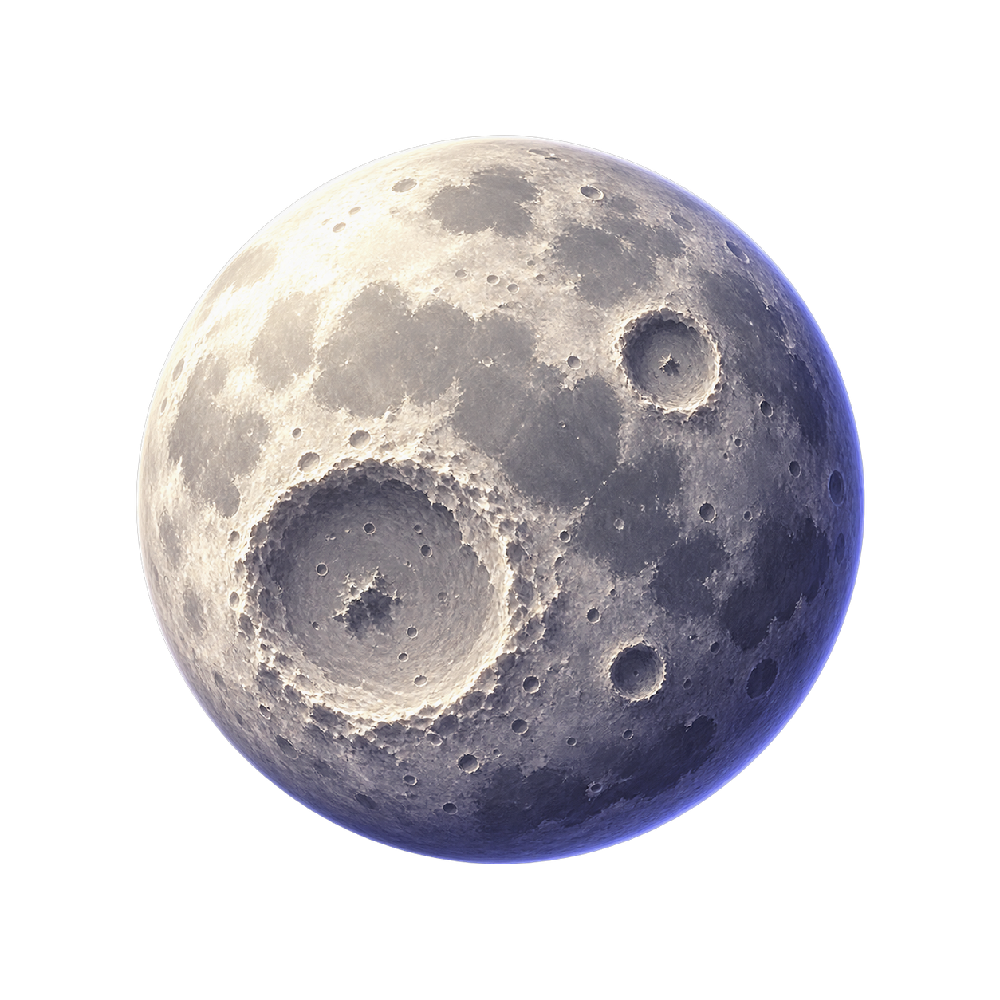
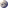
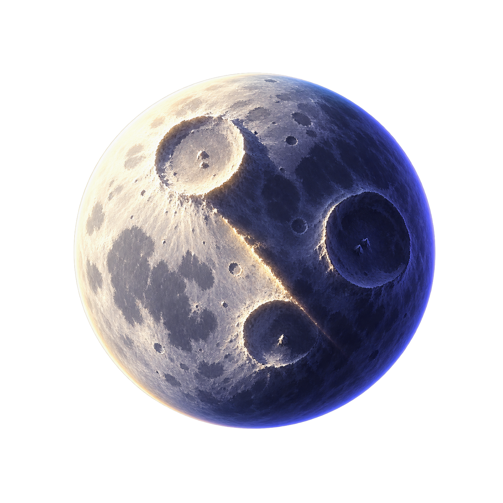
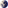
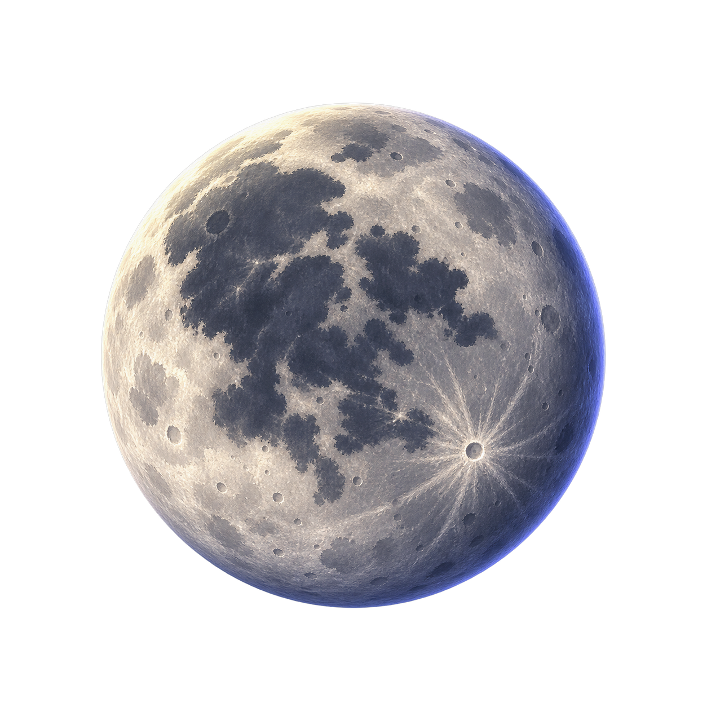
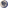

Candidate A
Crater Pearl
Bright literal full Moon with a dominant lower-left basin and pearl-like spherical falloff.

Small-size read: clearest literal Moon; the basin remains the anchor.

Snowball Effect · Stage 2 Planetary
Actual target: 8 px diameter (Planetary local Lv0, global Lv4, radius 4). Masters are transparent concept art. Every scaled view below uses the same deterministic 8×8 transparent derivative; 4× and 16× are nearest-neighbor display only.
Candidate A
Bright literal full Moon with a dominant lower-left basin and pearl-like spherical falloff.

Small-size read: clearest literal Moon; the basin remains the anchor.

Candidate B
Bold diagonal terminator, three broad crater masses, and the strongest light/shadow silhouette.

Small-size read: highest value contrast; bright face and cool shadow split immediately.

Candidate C
Near-full graphic Moon with one connected dark maria mass and a bright lower-right ray point.

Small-size read: most iconic; the central maria and ray point survive as a simple emblem.
